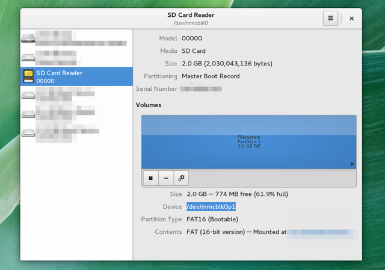
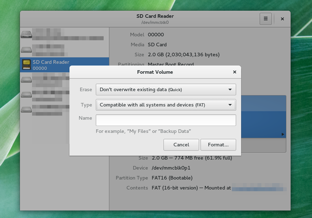
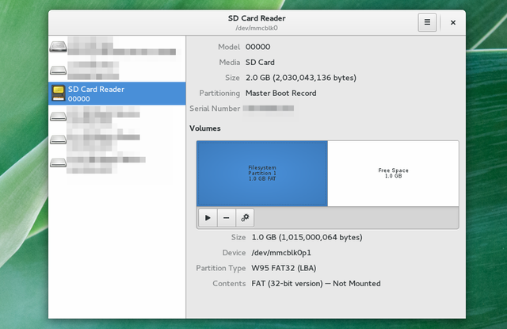
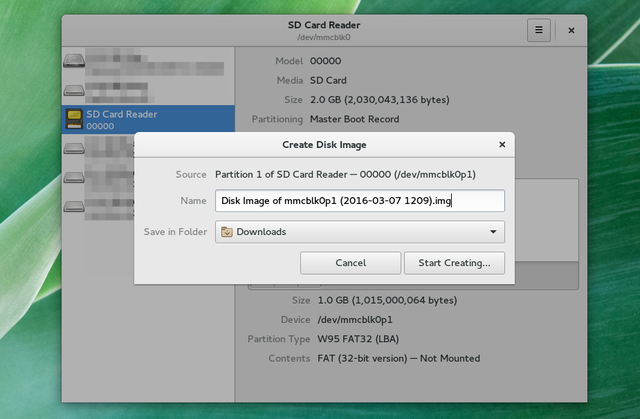
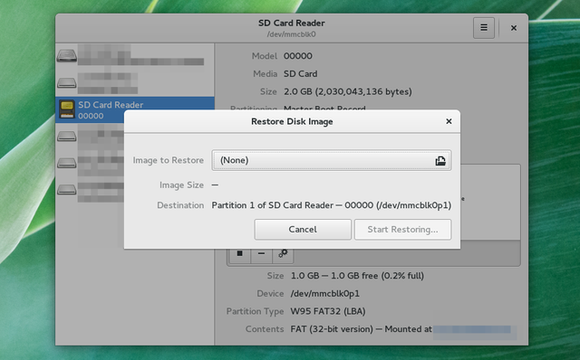
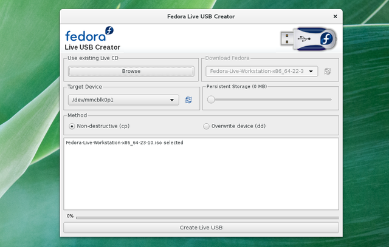

Как записывать, форматировать и управлять SD картой на Linux
Joshua Kormik
Read more posts by this author.
10 июля 2017 • 5 мин. чтения
SD карты играют особую роль в жизни пользователей Linux. Да, они служат для того чтобы хранить данные. Также это один из самых простых способов расширить объем памяти на лептопе. В большинстве случаев эти маленькие квадратики портативной памяти являются тем, что вам понадобится в первую очередь для превращения аппаратов на Windows или Mac OS в Linux Box.
Раз SD карты решают так много проблем, то не будет лишним знать как ими управлять. Ошибки случаются и они способны приводить к потере данных. Такой исход вряд ли кому-то понравится.
Существует множество способов настройки SD как с помощью командной строки, так и с использованием графических приложений. Вот как это делается.
Что такое диспетчер разделов?
Раздел - это часть цифрового пространства хранения. Им может быть весь ваш жесткий диск, но так бывает не всегда. В варианте с альтернативной загрузкой у вас будет один раздел посвящен какому-нибудь дистрибутиву Linux, а другой будет выделен под Windows. Некоторые используют разделы для отделения ОС от личных файлов. Часто еще есть отдельный раздел под swap.
Диспетчер разделов - это средство для управления разделами (не удивительно). Именно его необходимо использовать для форматирования SD карт, создания новых разделов или дубликатов.
Обычно на SD картах по умолчанию всего один раздел, но при желании одну 32 гигабайтную карту всегда можно разбить на два раздела по 16 гигабайт.
Вот вам карта на 2 гигабайта в моем компьютере.

Обычно картам памяти назначаются простые имена типа /dev/sda, /dev/sdb, или /dev/sdc. Но так случается не всегда. В варианте выше имя ==/dev/mmcblk0p1 ==вышло куда длиннее. Если бы я использовал командную строку, о которой я поговорю чуть позже, то я бы прописывал именно это месторасположение.
Еще один способ узнать путь, это ввести в терминале:
mount
Вы получите длиннющий список, так что этот способ рекомендуется тем, кто уже понимает, что он ищет. Даже в этом случае я предпочитаю запускать уже предустановленный диспетчер разделов.
Некоторые окружения рабочего стола и дистрибутивы поставляются с собственными диспетчерами разделов. Gnome DISKS (картинка выше) интегрирован с рабочим столом GNOME 3.x, в то время как пользователи KDE скорее отдадут предпочтение KDE Partition Manager. До сих пор во многих дистрибутивах встречается GParted. Все эти средства, по сути, делают одно и то же.
Если вы ищете отдельную программу, без необходимости дополнительно что-либо устанавливать, которая работает практически на всех дистрибутивах Linux, то обратите внимание на dd. Это средство командной строки делает процесс создания бекапов SD карт и записи образов делом незамысловатым. Но в работе с ним надо быть осторожным, так как одна неверная команда способна полностью стереть все с вашего жесткого диска.
Редакторы разделов, по сути, дают вам возможность выбрать раздел и отформатировать его в новый. Если вы хотите отдать или просто избавиться от карты, то есть возможность полностью стереть данные. Это займет достаточно много времени, так что, если необходимо лишь избавиться от ненужных данных или создать загрузочную карту с Linux, то будет логичным выбрать быстрый вариант.
В процессе вам предстоит выбрать тип раздела. Формат FAT работает со многими операционными системами. Именно в этом формате начинает свое существование большинство SD карт. Вполне возможно, что вам нужен именно он.

Для того чтобы стереть все данные с карты с помощью командной строки, мы прибегнем к помощи dd. Команда ниже сотрет все данные с карты и заменит ее на нули. информацию, стертую таким способом, восстановить. но большинству будет это не под силу.
dd if=/dev/zero of=/dev/sdc
В dd if обозначает источник данных. of указывает направление. В данном случае мы копируем нули в /dev/sdc. Заменить этот путь на тот, что ваш компьютер приписал карте.
После запуски команды вам может понадобиться создать новый раздел. Возможно даже два.
Создайте отдельный раздел
Создание отдельного раздела на основе уже используемого вами - это рискованный выбор, который способен привести к потере данных. Хотя это и можно попытаться сделать с помощью GParted Live SD. Чтобы все прошло не так болезненно, предварительно сохраните все данные. Сотрите текущий раздел путем нажатия на "-" или выбора варианта из меню. затем нажмите на "+" или выберите вариант создания нового раздела.
Вместо того чтобы использовать доступное пространство, выберите свой объем. На рисунке ниже я заготавливаю пространство для двух разделов одного размера.

Так можно создать очень много разделов.
Если хотите делать это через командную строку, то можете переключиться на fdisk и наслаждаться магией.
Создание резервной копии SD карты
Самый очевидный способ создания резервной копии SD карты - это открыть файловый менеджер и скопировать все данные на компьютер. Мне этого всегда хватало. Но этот вариант очевидно не лучший, особенно если вы хотите получить идентичные резервные данные или собираетесь хранить сразу несколько и более бекапов.
В таком случае понадобиться создать образ раздела.

Для того чтобы сделать это в dd откройте терминал и введите то, что указано ниже.
dd if=/dev/sdc of=sdcard.img
Эта команда создает резервную копию всего, что есть на вашей карте в файле .img в домашней директории, что позволит вам позже полностью восстановить все данные. Для создания резервной копии на жестком диске вам понадобится столько места, сколько всего доступно на SD карте, то есть, если у вас карта 32 гигабайта, то 32 свободных гигабайта на жестком диске вам и понадобится. Процесс может занять много времени. В какой-то момент вам даже покажется, что dd приостановила работу. Наберитесь терпения.
Как только вы будете готовы восстановить данные на карте, просто поменяйте местами директории в dd.
dd if=sdcard.img of=/dev/sdc
В редакторе разделов используйте вариант восстановления образа. Далее появится окно выбора образа, ранее созданного вами для записи на SD карту.

Для запуска Linux с SD карты с помощью dd для начала скачайте образ дистрибутива, который вы собираетесь устанавливать (или протестировать). Затем вставьте путь к этому файлу в качестве параметра if, как это было сделано при восстановлении данных. Пример:
dd if=/home/user/Downloads/parabola-2015.11.11-dual.iso of=/dev/sdc
Это последняя из команд dd, которую я здесь опишу. Просто знайте, что dd настолько мощно, что способно клонировать полностью ваш жесткий диск, даже если вы оперируете терабайтами памяти. Как только будете готовы к чему-то покруче, то можете перейти к списку команд dd с Wikipedia.org. Но, опять таки, будьте осторожны! С такими вещами лучше не торопиться.
Если вы не хотите возиться с командной строкой, поищите в пакетном менеджере вашего дистрибутива средство для создания Live USB stick. У Ubuntu есть Satrtup Disk Creator. Fedora оперирует Live USB Creator. Эти и иные дистрибутивы так же работают с UNetbootin. При работе с одним из этих средств вам необходимо будет выбрать образ для установки (или заставить приложение скачивать дистрибутив прямо на ходу) и SD карту в качестве целевого устройства.

У SD карт есть множество преимуществ перед флешками. Они тоньше, легче, проще в переносе охапками... Ко всему прочему они подключаются так, что их потом не видно.
Если вам по нраву флешки, то это не беда. Средства для работы с картами обычно подходят или для флешек.
Что бы вы посоветовали людям, которые хотят узнать, как управлять своими SD картами? Вы когда-нибудь создавали несколько разделов на одной карте? Есть ли у вас загрузочная карта? Поделитесь своим опытом в комментариях!